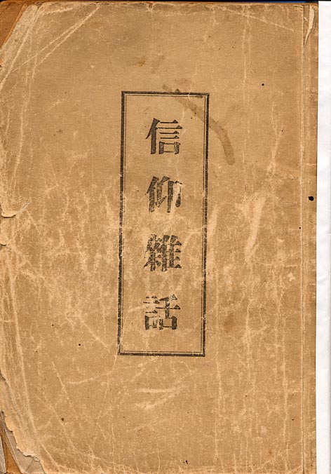
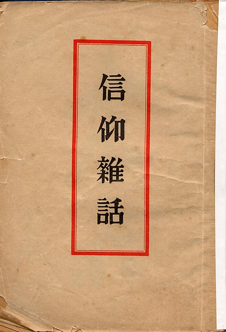
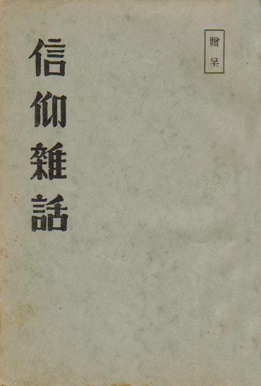
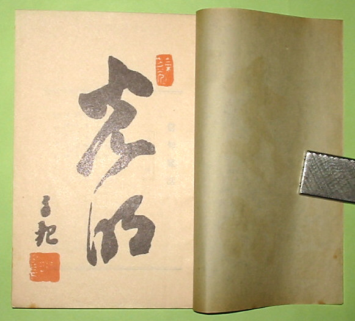
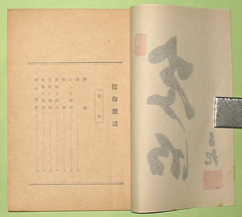

――― 岡
田 自 観 師 の 論 文 集 ――発行誌別
信仰雑話
 |
信仰雑話（初版） 昭和23年 9月 5日発行 |
 |
信仰雑話（再版） 昭和24年 3月 5日発行 著者 岡田自観 |
 |
信仰雑話 贈呈用再版 昭和26年10月10日発行 Ｂ６版 106P 非売品 著者 岡田自観 発行人 百海聖一 発行所 世界救世教出版部 |
| 贈呈用は何度か印刷発行された | |
  |
|
贈呈版の御文字。印刷です。 |
|